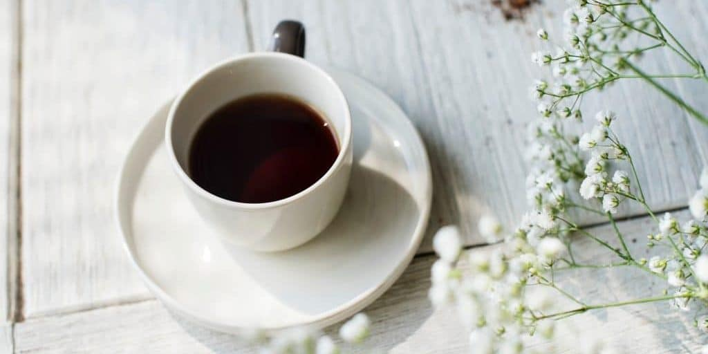

Kahve Çeşitleri Nelerdir
Gün içerisinde arkadaşlarınızla oturup sohbet etmek için gittiğiniz
bir kafede, menüyü istediğinizde onlarca kahve çeşidiyle
karşılaşabilirsiniz. Bu kahvelerin adını bilmenizin yanı sıra
içeriğini, nasıl yapıldığını, içerisine ne konulduğunu bilmek,
vereceğiniz siparişin damak tadınızı karşılamada daha doğru bir tercih
yapmanıza olanak tanıyacaktır. Fakat ilk olarak kahve çeşitlerini
değil kahve çekirdeklerini tanımakta yarar var.
Satın aldığınız hazır kahve paketlerinde veya gittiğiniz kafelerde
sipariş verdiğiniz kahvelerin üzerinde genellikle Arabica veya Single
Origin yazılarını görürsünüz. Bunlar; kahve çekirdeklerine verilen
isimler.
Kahve cekirdekleri makalemizi okumanizi tavsiye ederiz.
Single Origin ifadesi ise içtiğiniz kahvenin harman olmadığını,
tümünün tek bir bölgede yetiştirildiğini tanımlayan bir ifadedir.
Genellikle kafelerde denk gelebileceğiniz House Blend, Office Blend
gibi harmanlar ise kahvenin içerisine farklı aromalarda kahve
çekirdeklerinin karıştırıldığını ifade eder. Kahve çeşitleri ise
temelde üçe ayrılır; Espresso bazlı kahveler, filtre kahve ve
çözünebilir kahve. Son yıllarda zenginleşen kahve kültürüyle birlikte
soğuk kahveyi de bu üçlünün yanına ekleyebiliriz.

Espresso
Sıkıştırılmış ve ince öğütülmüş kahveyle birlikte 90 dereceliksuyun 30
saniye boyunca, 9 bar basınçla demlenmesiyle hazırlanıyor. Espresso,
30 mL’lik shot bardaklarında servis edilir. Elektrikli makinelerin
yanı sıra ocak üstünde moka pot aracılığıyla da Espresso
hazırlayabilirsiniz. İtalyanlara özgü olan Espresso, diğer birçok
kahvenin de ana malzemesini oluşturuyor.

Americano
Espresso’dan daha yumuşak, filtre kahveden ise daha sert içimi olan
Americano kısaca, Espresso’nun sıcak suyla seyreltilmiş halidir.
Americano’nun sertlik miktarını, Espresso miktarı, Espresso içerisinde
bulunan kahve miktarı ve su miktarı ile rahatça ayarlayabilirsiniz.
Americano, adından kaynaklı olarak Amerika Birleşik Devletleri’nde
içilmeye başlandığı düşünülebilir. Fakat hikaye biraz daha farklı. 2.
Dünya Savaşı sırasında Amerikan askerleri, Espresso ile tanışırlar.
Kendilerine yoğun, sert ve az gelen Espresso’ya sıcak su ekleyerek
kendi damak tatlarına uygun hale getirirler. Böylelikle farkında bile
olmadan günümüze kadar ulaşmayı başaran Americano’nun temellerini
atarlar.

Cappuccino
Espresso, süt ve süt köpüğüyle hazırlanan Cappuccino adını, Capuchin
rahiplerinden alıyor. Espresso’dan daha hafif, Latte’den daha sert
olan Cappuccino’yu hazırlamak için her bir fincana bir shot Espresso
eklenir. Daha sonra süt, 70 dereceye kadar ısıtılır. Burada önemli
olan nokta, sütün üzerinde 2 – 3 santimetreye kadar köpük
oluşturabilmektir. Sonrasında ısıtılan süt, Espresso’ya eklenir.
Cappuccino’nuza sunum zenginlikleri katmak istiyorsanız, çikolata
parçacıkları ekleyebilirsiniz.
Filtre Kahve
Öğütülmüş kahve, metal veya kağıt filtre yardımıyla sıcak sudan
geçirilerek demlenir. French Press’te hazırlayacaklar ise cam kap
içerisine sıcak su ve öğütülmüş kahveyi koyup, bir süre demlendikten
sonra metal filtre yardımıyla süzerek filtre kahveyi hazır hale
getirebilirler. Dünya üzerinde en çok tüketilen kahve olan filtre
kahveye dilerseniz süt, şeker veya krema ilave edebilirsiniz.